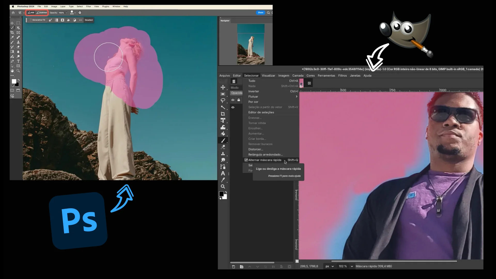

Design e Linux. Dois temas que para muitos não se misturam, seja porque algumas destas pessoas tem a impressão de que o sistema do pinguim é somente para programadores ou heavy-users de tecnologia, ou pela falta dos softwares da Adobe, ou até ambos.
Felizmente, estas pessoas não poderiam estar mais erradas. Conforme o tempo avança, mais e mais tecnologias de software livre tem sido adotadas por pessoas e empresas, dentre elas o uso de distribuições Linux.
Esse foi um salto que eu já tinha feito no passado durante meu período de faculdade e recentemente também. Ao longo de todos os anos da minha carreira como designer, sempre que se falava de Linux, eu ouvia um monte de desinformação e duas perguntas com alguma recorrência:
- Será que dá pra ser designer usando Linux?
- Como você consegue isso!?
E... Bem... Eu expliquei em todas as vezes que fui perguntado, e poderia continuar fazendo. Porém, eu achei mais prudente deixar isso por escrito, como uma espécie de documentação ou manual, assim eu posso só enviar para as pessoas que quiserem entender como isso funciona ou que decidirem buscar a resposta para essas perguntas.
Então dá pra ser designer usando Linux?
Sim, é completamente possível ser designer usando Linux e outros softwares alternativos ou livres. Eu faço isso desde mais ou menos 2017 e não tenho arrependimentos ou quaisquer tipos de problemas. Na verdade só tive vantagens, e dependendo das suas configurações de hardware e necessidades, você também terá muitas vantagens por usar Linux ao invés de outros sistemas mais tradicionais.
Falando de sistemas Linux, para escolher um é bom pensar no que você já conhece de outros sistemas. Se você usa Windows, eu recomendo distribuições como Mint, Zorin ou Kubuntu. Se você tem mais costume com MacOS, talvez devesse tentar algo como o Fedora, Deepin ou o tradicional Ubuntu.
Aqui neste vídeo você pode ver um guia sobre como formatar o seu computador e instalar qualquer um destes sistemas (o processo é mais ou menos o mesmo para todos), caso queira testar.
No meu caso, por muitos anos tive computadores de entrada que não eram plenamente funcionais para um bom trabalho como designer, isso em grande parte por conta do Windows, e não do hardware, por incrível que pareça. Sim, o Windows é um sistema funcional e tem total suporte dos desenvolvedores de software e hardware, mas isso tem o custo de ser um sistema inchado e que performa mal em hardware limitado ou defasado.
Enquanto estava na faculdade, eu era o orgulhoso dono de um all-in-one CCE, modelo Solo A45, ele vinha com Windows 8... E era terrível. Para fins de comparação, ele era como um notebook positivo dos mais baratos de hoje em dia (considerando 2025)... até funciona, mas com problemas se você tentar algo que demande mais do que o básico.
O pobre do PC demorava para ligar, travava com frequência e mesmo fazendo todo tipo de otimização e melhorias de hardware (as possíveis, já que não dava pra trocar tudo) ele só não funcionava bem pra maioria das coisas, desde as básicas até as mais exigentes.
Isso até que eu decidi instalar Linux nesse computador. Peguei a distribuição Lubuntu, que é baseada no Ubuntu e é conhecida por ser muito leve e performar bem em hardware limitado. Foi como mudar da água barrenta para o vinho envelhecido em barris do melhor carvalho do planeta feitos pelo melhor artesão existente. E não, não é exagero.
O sistema era tão leve que meu computador ligava muito rápido e ele era muito responsivo em todas as tarefas. O sistema consumia pouquíssimo do hardware, então sobrava muito para os softwares desempenharem bem. Tudo ficou tão bom que eu até conseguia jogar alguns jogos mais pesados, que jamais funcionaram no Windows naquele mesmo computador. O problema foi... a Adobe.
Como trabalhar sem a Adobe/Creative Cloud?
Pra que você fique ciente... Não é que não da pra usar os programas da Adobe no Linux. O problema é que os métodos para conseguir utilizar dependem de conhecimento avançado sobre softwares, dependencias e a camada de compatibilidade com apps de Windows conhecida como Wine. E mesmo sabendo sobre tudo isso, talvez o resultado final não seja agradável (a falta que um suporte nativo não faz...), então os caminhos mais fáceis para usar software Adobe no Linux são: usar eles em uma máquina virtual, que vai reduzir a performance geral dos apps, ou usar a versão online de algumas das ferramentas. Mas vamos supor que você decida, assim como eu, que não vai usar nada da Adobe.
Esse foi um baita desafio no começo, afinal, toda a minha formação até o começo da faculdade foi usando softwares da Adobe, e eu não sabia trabalhar sem eles, mas tive que aprender e isso foi muito bom, profissionalmente falando.
Eu substituí cada software da Adobe por uma alternativa que fosse software livre ou funcionasse no Linux. Descobri o Inkscape como alternativa ao Adobe Illustrator, GIMP como alternativa ao Adobe Photoshop e vários outros que eu deixei listados nesse artigo aqui caso você tenha interesse em saber mais.
Mas fique sabendo, não é porque é uma alternativa que tudo é exatamente igual. Cada ferramenta tem suas particularidades e limitações. A questão nesta transição é conseguir adaptar as ferramentas as suas necessidades e descobrir as especificidades de cada uma e como adapta-las ao seu fluxo de trabalho. A maioria delas da conta de fazer o trabalho médio de design de forma profissional, cabe mais a você escolher e se adaptar.
Tá bom, mas e como você consegue isso!?
A partir de duas coisas: estudo profundo e prática.
Quando eu falo de estudo profundo é entender uma técnica ou forma de executar algo além da ferramenta que você está usando. Isso permite que você use a mesma técnica em qualquer outra ferramenta, usando os recursos disponíveis, com o mesmo nível de qualidade.
 Exemplo de seleção por pintura no Photoshop e no GIMP. Mesmo recurso, em ferramentas diferentes.
A segunda parte é a prática. Você não vai se adaptar a ferramenta alguma sem praticar. Pegue projetos e se coloque na posição de fazer com as ferramentas que você quer adquirir prática, e faça. Nada te dará mais domínio sobre uma ferramenta do que ter que se virar com ela para fazer um trabalho.
E entenda, não usar a Adobe não significa especificamente usar Software Livre, caso você não queira. Hoje temos concorrentes muito bons para os softwares da Adobe que são mantidos por outras empresas, como os softwares da Affinity, o Davinci Resolve, Capture One e vários outros.
Felizmente, hoje em dia temos opções, a questão é: quantos de nós estão prontos e dispostos a migrar para alguma delas?
EXTRA: O medo da exclusão por não usar Adobe
O mercado demanda conhecimento sobre a Creative Cloud para muitas vagas de emprego, isso é um fato. Mas lembra do que eu disse sobre estudo profundo e prática? Aprender neste formato é o que vai garantir que mesmo que você não use com frequência (ou não use de forma alguma) os softwares da Adobe, você não se sentirá completamente perdido caso precise usá-los.
Fora que você pode usar os atalhos de teclado das ferramentas da Adobe em qualquer das outras ferramentas alternativas, então não perderia nem mesmo a memória muscular dos atalhos. Tudo é uma questão de adaptar as coisas para usar o que funciona para você.
E na minha experiência, poucos foram os clientes ou posições de trabalho que exigiram que eu usasse ferramentas específicas. Na grande maioria dos casos, essa pergunta é feita para que se tenha uma referência em relação aos conhecimentos, mas não necessariamente ao uso da ferramenta.
Até porque ninguém vai se preocupar se uma logo foi feita no Affinity Designer ou no Inkscape se ela estiver salva e fechada corretamente em formato [AI] (falo por experiência própria). No fim, o importante é seu trabalho ser entregue com qualidade e estar acessível para quem precisa, esse é o resultado esperado. A ferramenta é só o veículo para isso, e chegar no destino depende do profissional, mais do que da ferramenta.